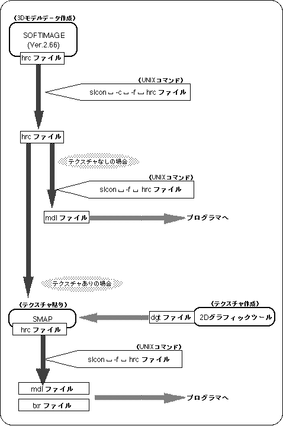

★SGL User's Manual
★データの受け渡し
★SGL User's Manual
★データの受け渡し
■ ｜進む▼
データの受け渡し
1.デザインデータ
本章ではデザイナーが作成した３Ｄモデルデータ、及びテクスチャの付いた３Ｄモデルデー
タを、ソフトウエアに組み込むためにプログラマへ渡す方法を説明します。
また、３Ｄモデルデータにテクスチャを付けるために必要なデータの動きについても説明します。
1-1.データの流れ
- SOFTIMAGEでモデリングした３Ｄモデルのデータは下記のような流れでプログラマに受け渡されます。
図1-1 デザインデータの流れ

1-2. SOFTIMAGEデータの変換・チェック
- デザイナーズ・チュートリアルで作ったＴＶモニターのデータを例にして、データの変換、加工、受け渡しの手順を具体的に説明します。
- ●データのチェック
- UNIXシェルを出してください。そこで、
- cd STUDY/MODELS（改行）
- と入力してください。これで、パス表示が
- ［（ホームディレクトリ名）/STUDY/MODELS］
- になったはずです。ここで、ls（改行）してください。ここに“SATURN_TV_SET.1-0.hrc”があるはずです。
- 注意
- ここはバージョン表示なので、“1-0”とは限りませんが、名前の部分が上記の様であれば問題ありません。
- ここで、
- cp SATURN_TV_SET.1-0.hrc ~/CHECK（改行）
- と入力してください。
- 注意
- “~”は"TAB"キーの上にあります。“~”でホームディレクトリを表します。
便利ですのでしばしば用いる記号です。
- ここでもう一つUNIXシェルを出し、そこで
- cd CHECK（改行）
- と入力してls（改行）してください。このCHECKディレクトリの中に、“SATURN_TV_SET.1-0.hrc”が存在することが確認できます。ここで、このファイル以外に.hrcファイルが存在しない事を確認したら、
- slcon -c -f SATURN_TV_SET.1-0.hrc（改行）
- と入力してください。すると次のように表示されます。
-
Check SATURN_TV_SET.1-0.hrc ←ファイル名
Name:SATURN_TV_SET ←モデル名
Total of 3 nodes => 4
Total of 4 nodes => 36 ↑Ｏ．Ｋ．
Total of 5 nodes => 0 ↓Ｎ．Ｇ．
Total of 6 nodes => 0
Total of more nodes => 0
- サターンに出せるモデルは“Total of 3 nodes”と“Total of 4 nodes”の所にだけ数字が入っているモデルだけで、“Total of 5 nodes”以上は有ってはならないことになっています。
- 注意
- 上記条件を満たすモデルだけ、テクスチャを貼ることが出来ます。“SMAP”を用いたテ
クスチャを貼る方法については、“Designer’s Tutorialの第６章：SMAPの使い方”で説明しています。
- 最後に、
- mkdir ~/CONV（改行）
- cp SATURN_TV_SET.1-0.hrc ~/CONV（改行）
- と入力して、プログラマに渡すデータとしてファイルをコピーします。
- 次に、
- cd ~/CONV（改行）
- と入力して、ディレクトリを移動します。
ここでls（改行）してください。ここにファイルがあるはずです。
ここでファイル名を変えましょう。
- mv SATURN_TV_SET.1-0.hrc sample.hrc（改行）
- と入力すれば、ファイル名が“sample.hrc”に変換されます。
- テクスチャを貼らない場合は：
- 前記の“sample.hrc”というファイルを使って、次のステップに進んでください。
- テクスチャを貼る場合は：
- SAMPによって“sample_smap.hrc”が生成されたものとして、次のステップに進んでください。
1-3.プログラマに渡す形式に変換
- 次に、“slcon”というUNIXのコマンドを用いて“sample.hrc, sample_smap.hrc”を、プログラマに渡すことができる形式に変換します。
- テクスチャを貼っていない場合のファイル形式・・・sample.hrc
- テクスチャを貼っている場合のファイル形式・・・sample_smap.hrC
- ここで、
- slcon -f sample.hrc（改行）
- と入力すれば、
- 元データが sample.hrc（テクスチャを貼っていない）の時は
sample.mdl
のファイルを生成します。
- 元データが sample_smap.hrc（テクスチャを貼っている）の時は
sample_smap.mdl
sample_smap.txr
のファイルを生成します。
- これらをプログラマの指定するディレクトリにコピーしてください。
■ ｜進む▼
★SGL User's Manual
★データの受け渡し
Copyright SEGA ENTERPRISES, LTD., 1997